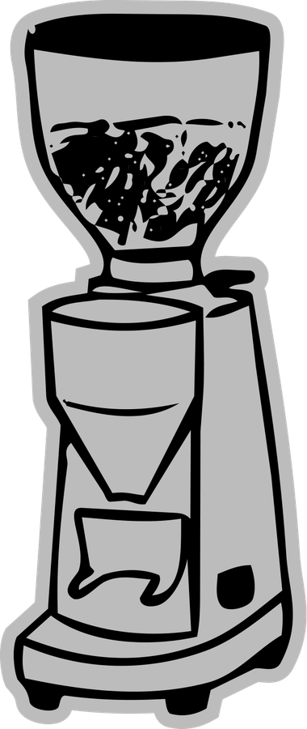
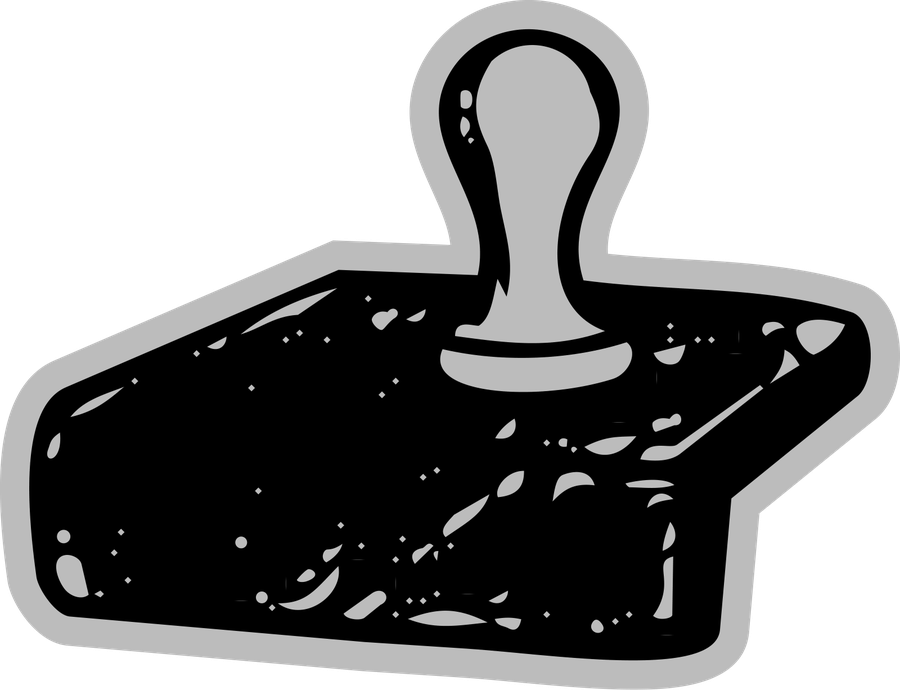
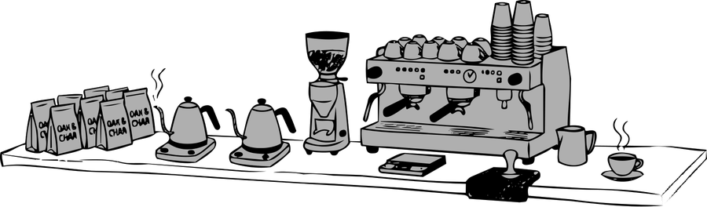

Fiecare întrebare vine cu un răspuns propus. Și cu motivul.
Nu te lăsăm singur în fața unui formular. La fiecare decizie, Groundwork propune varianta pe care ar alege-o un om din breaslă și îți explică de ce: ce ridică bonul mediu, ce complică operarea, ce așteaptă piața.
Planul te contrazice când e cazul.
Pui un preț care nu se potrivește cu segmentul ales, iar panoul din dreapta ți-o spune pe loc. Bugetul declarat nu acoperă estimarea formatului, afli înainte să semnezi vreun contract, nu după.
Confirmi conceptul înainte să se scrie planul.
La pasul 8, tot ce ai răspuns devine un paragraf: locul, poziționarea, oaspeții, echipa, banii. Îl citești, modifici ce nu sună a tine și abia apoi se generează cele 16 capitole.
Primești un plan de citit, nu un tabel de descifrat.
Capitolele sunt text: argumentat, în română, cu tabele doar acolo unde cifrele cer tabel. Orice paragraf se editează direct în pagină, iar exportul în PDF e la un click.